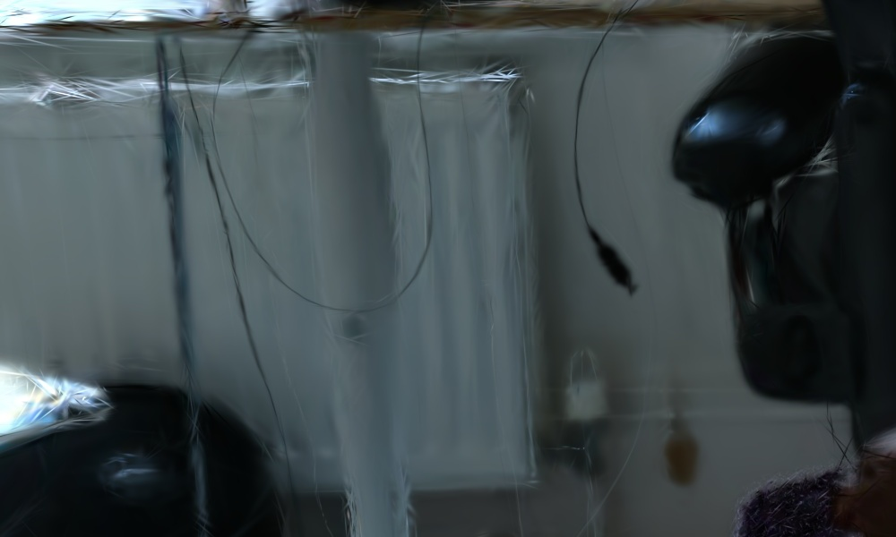
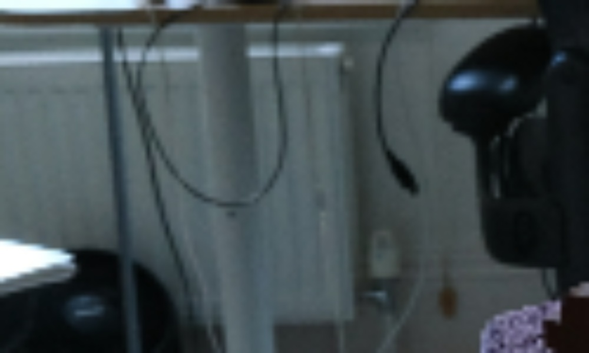
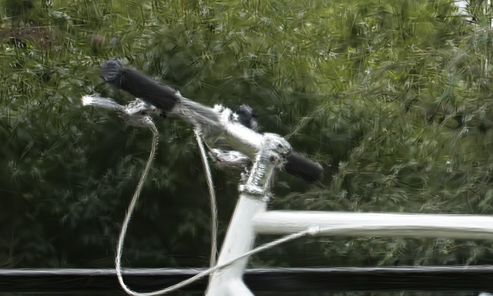
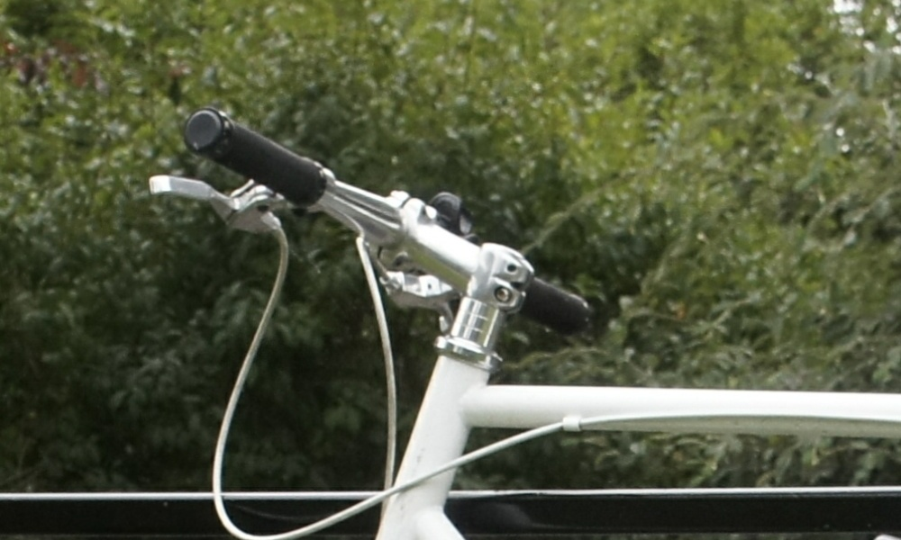

Results
Comparison wtih 3DGS
3DGS produces dilation and erosion artifacts due to the use of dilation. It produces erosion effects when zooming in or moving the camera closer. This is because the dilated 2D Gaussians become smaller in screen space, rendering object structures thinner than they actually appear. Conversely, screen space dilation produces dilation artifacts when zooming out or moving away from the scene. In this case, dilated 2D Gaussian become bigger in screen space, rendering object structures thicker than they actually appear. In contrast, our method is free of such artifacts by introducing a 3D smoothing filter and a 2D Mip filter.
Comparison wtih 3DGS + EWA
Replacing the 2D dilation of 3DGS with an EWA (elliptical weighted average) filter, denoted as 3DGS + EWA, reduces the dilation and erosion artifacts. However, it produces high-frequency artifacts when zooming in, while our method is free of such artifacts, as shown in the following comparisons.
Here, we show more comparisons with 3DGS + EWA. Both models are trained with downsampled images with factor 8 and render at higher-resolution. GT (Training resolution) is the image we used for training but bilinearly upsampled to higher-resolution for reference and GT (8x resolution) is the real GT image we used for evaluation.
3DGS+EWA
Mip-Splatting (ours)
GT (Training resolution)
GT (8x resolution)
Effectiveness of 2D Mip Filter
Our 2D Mip filter simulates a 2D box filter in physical imaging process. It approximates exactly 1 pixel in screen space, thus effectively reducing aliasing artifacts. As shown in the following video, removing the 2D Mip filter results in aliasing artifacts when zooming out.
Effectiveness of 3D Smoothing Filter
The 3D smoothing filter constrains the size of the 3D Gaussian primitives based on the maximal sampling frequency induced by the training views, eliminating high frequency artifacts when zooming in. In the following comparisons, we train the models with downsampled images and render high resolution images to simulate zoom-in effects. Excluding the 3D smoothing filter results in high-frequency artifacts. Note that both models are trained with downsampled images with factor 8 and render at higher-resolution. GT (Training resolution) is the image we used for training but bilinearly upsampled to higher-resolution for reference and GT (8x resolution) is the real GT image we used for evaluation.
Ours w/o 3D filter
Mip-Splatting (ours)
GT (Training resolution)
GT (8x resolution)
Real-Time Interactive Viewer
Click the image to use the real-time interactive viewer. Please open the viewer with Chrome or Firefox. For more results, please check our online viewer.
 Lego
Lego